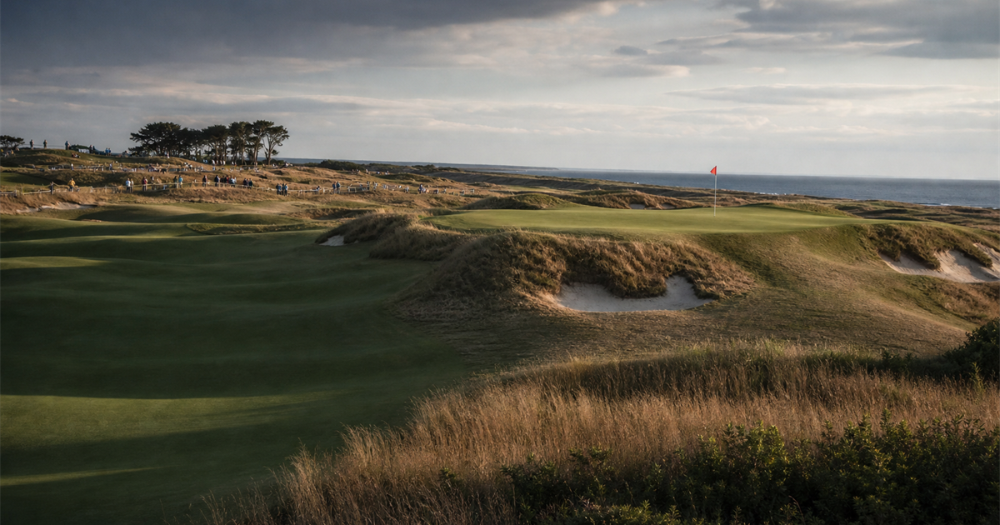

U.S. Open Golf
First held1895
FrequencyAnnual
Top 4 U.S. Open titles
1 United KingdomWillie AndersonU.S. Open wins1901190319041905
United KingdomWillie AndersonU.S. Open wins1901190319041905
4
2 United StatesBobby JonesU.S. Open wins1923192619291930
United StatesBobby JonesU.S. Open wins1923192619291930
4
3United StatesBen HoganU.S. Open wins1948195019511953
4
4United StatesJack NicklausU.S. Open wins1962196719721980
4
 More golfGolf topic
More golfGolf topicMore majors, courses and calendar moments.
U.S. Open Golf 2026 in Southampton
CountryUnited States
CitySouthampton
VenueShinnecock Hills Golf Club
Dates18-21 Jun 2026
StatusScheduled
Format72-hole major